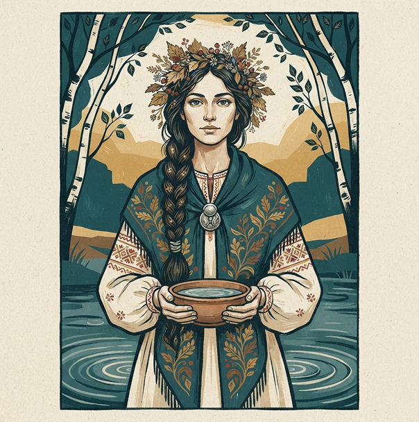
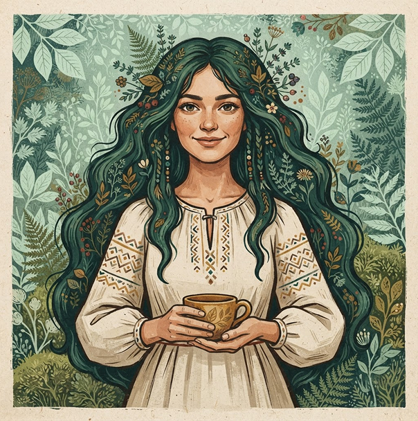
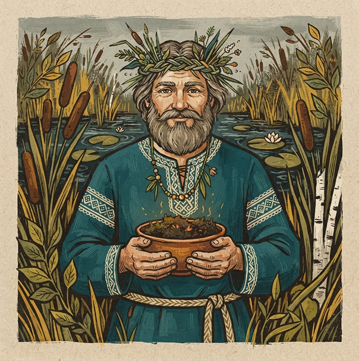
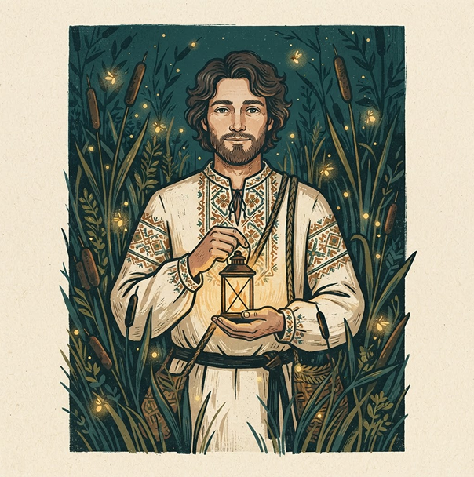
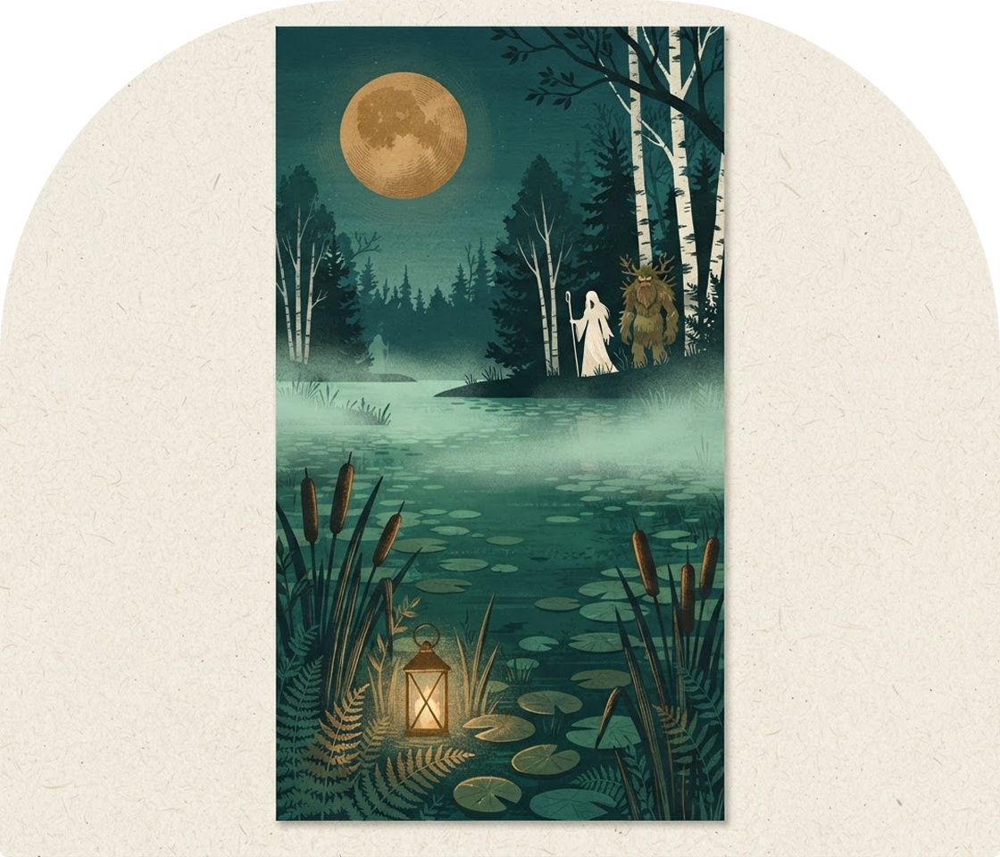

Вода й турбота
Берегиня
Олена · Супровід і перша розмова
Слухає без поспіху, пояснює процедури та допомагає підготуватися до візиту.
Поруч на вашій стежці
Головна / Цілителі
Наші опікуни тиші
Берегиня, Мавка, Болотяник і теплий Вогник. У кожного — свій характер, у всіх — спільна увага до людини.
Чотири стихії однієї турботи

Вода й турбота
Олена · Супровід і перша розмова
Слухає без поспіху, пояснює процедури та допомагає підготуватися до візиту.
Поруч на вашій стежці

Ліс і трави
Соломія · Трав’яні ритуали
Знайомить із травами, уточнює чутливість до рослин і готує вашу чайну паузу.
Поруч на вашій стежці

Торф і тепло
Остап · Тепло землі
Готує простір для грязьових ритуалів і уважно стежить за вашим комфортом.
Поруч на вашій стежці

Світло й спокій
Левко · Зустріч і відпочинок
Зустріне на стежці, покаже кімнату тиші та нагадає залишити час для себе.
Поруч на вашій стежці
Художні образи та імена вигаданої команди. Легенди створюють атмосферу, а не замінюють фахову консультацію.

Легенда нашого місця
Колись мандрівниця заблукала поміж очеретів. Вогники не повели її в трясовину — вони освітили суху стежку до берези. Там Берегиня подала води, Мавка заварила трави, а Болотяник зігрів землю під ногами.
Відтоді тут кажуть: справжня сила місця — не в диві, а в тому, щоб вчасно зупинитися й подбати одне про одного.
Авторська легенда, натхнена слов’янськими образами. Не історична довідка та не медична обіцянка.
Перший крок — розмова
Розкажіть про себе. Ми допоможемо обрати безпечний формат.